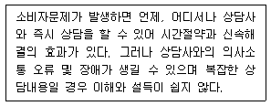
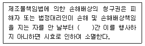
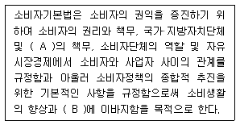
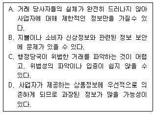
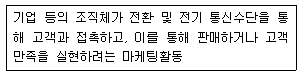
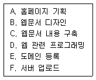
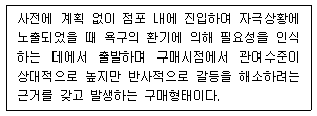

소비자전문상담사-2급 (2010-03-07 기출문제)
1과목: 소비자상담 및 피해구제
1. 소비자의 특성별 상담대응으로 가장 적합하지 않은 것은?
- 우유부단한 소비자에게는 선택대안을 먼저 제시한다.
- 반말형 소비자에게는 민첩하고 빈틈없이 응대한다.
- 신경질형 소비자에게는 친절하되 타이르듯 응대한다.
- 상품지식형 소비자에게는 상품지식의 가치를 존중한다.
(정답률: 알수없음)

2. 소비자분쟁해결기준의 대상품목 중 공공서비스에 해당하지 않는 것은?
- 전기서비스
- 전화서비스
- 가스서비스
- 수도서비스
(정답률: 알수없음)
3. 소비자 입장에서 소비자상담이 필요한 이유가 아닌 것은?
- 소비자만족 경영이 확산되고 있기 때문에
- 소비자의 의식 수준이 높아지고 있기 때문에
- 소비자불만 및 피해가 증가하고 있기 때문에
- 한정된 자원으로 만족스러운 선택을 하기 위한 소비자 의사결정과정이 어렵기 때문에
(정답률: 알수없음)
4. 에드워드 홀(Edward T. Hall)이 정의한 4가지 인간관계 영역 중 판매원이 소비자를 대할 때 또는 소비자가 서비스맨에게 이야기할 때와 같이 주로 대인업무를 수행할 때 사용되는 거리는?
- 친밀한 거리
- 개인적 거리
- 사회적 거리
- 대중적 거리
(정답률: 알수없음)
5. 기업이 기존 고객을 유지함으로써 얻을 수 있는 효과와 가장 거리가 먼 것은?
- 고객의 1인당 구매량 증대
- 고객관리 비용 절감
- 고객이 지불하는 해당 회사제품과 서비스에 대한 프리미엄 가격 감소
- 고객들 간의 긍정적인 구전효과
(정답률: 알수없음)
6. 아웃바운드 전화상담에 해당하지 않는 것은?
- 텔레마케팅으로 고객에게 보험가입 여부를 문의하였다.
- 신제품에 대한 고객반응을 조사했다.
- 상품정보 문의 및 구매 주문을 받았다.
- 고객생일에 축하전화를 했다.
(정답률: 알수없음)
7. 인터넷 콜센터의 기능에 대한 설명으로 틀린 것은?
- 인바운드 서비스와 아웃바운드 서비스를 모두 통합 관리하는 것이 일반적이다.
- 전화요청 서비스는 고객이 인터넷상에서 상담서비스 신청 시 연락할 전화번호를 남기면 상담원이 발신하여 상담이 처리되는 것이다.
- 음성통화 서비스는 홈페이지의 상담원 요청버튼을 클릭하여 상담원과 직접 통화할 수 있는 장치이다.
- 웹 콜백 서비스는 웹 연동기술을 사용하여 상담원이 고객에게 필요한 상품이나 정보의 화면을 고객에게 보내주며 상담하는 것이다.
(정답률: 알수없음)
8. 일반적 소비자분쟁해결기준상 품질보증기간과 부품보유기간에 대한 설명으로 틀린 것은?
- 품질보증기간과 부품보유기간은 해당 사업자가 품질보증서에 표시한 기간으로 한다.
- 사업자가 품질보증기간과 부품보유기간을 표시하지 아니한 경우에는 품목별 소비자분쟁해결기준을 따른다.
- 중고물품 등에 대한 품질보증기간은 품목별 분쟁해결기준에 따른다.
- 품질보증기간은 소비자가 물품 등을 구입하거나 제공받고 사용하기 시작한 날부터 기산한다.
(정답률: 알수없음)
9. 구매 전 상담의 내용과 가장 거리가 먼 것은?
- 제품의 중요 부품 설명
- 제품의 가격 설명
- 제품의 사용방법의 설명
- 구매계약서 작성의 설명
(정답률: 알수없음)
10. 다음 중 적극적으로 듣기를 위한 전략이 아닌 것은?
- 자신의 단어로 다시 바꾸어 말하기
- 필요한 내용을 질문하기
- 피드백
- 비교하기
(정답률: 알수없음)
11. 효과적인 소비자상담을 위해 도움이 되는 의사소통의 지침이 아닌 것은?
- 적극적인 경청의 자세를 취한다.
- 정직하고 성실하게 대한다.
- 쉽고 간결하게 설명한다.
- 감정적인 말에 쉽게 반응한다.
(정답률: 알수없음)
12. 소비자분쟁해결기준상 결혼정보업에서 회원가입계약 성립 후 사업자의 귀책사유로 인한 계약해제 및 해지 시 보상기준은? (단, 사업자의 소개개시 전에 해지된 경우)
- 가입비 환급 및 가입비의 10% 배상
- 가입비 환급 및 가입비의 20% 배상
- 가입비 환급 및 가입비의 30% 배상
- 가입비 환급 및 가입비의 40% 배상
(정답률: 알수없음)
13. 품목별 소비자분쟁해결기준에서 보상기준이 정해져 있지 않은 품종은?
- 금융업
- 자동차대여업
- 청소대행서비스업
- 택배 및 퀵서비스업
(정답률: 알수없음)
14. 소비자분쟁해결기준에 대한 설명으로 틀린 것은?
- 법률로서 제정 공포되므로 사업자는 반드시 따라야 한다.
- 일반적 소비자분쟁해결기준과 품목별 소비자분쟁해결기준으로 구분한다.
- 소비자피해와 관련한 보상수준의 가이드라인 성격을 갖는다.
- 소비자피해가 빈발하는 품목을 중심으로 계속 추가되고 있다.
(정답률: 알수없음)
15. 소비자상담사가 갖추어야 할 전문적 능력과 가장 거리가 먼 것은?
- 소비자상담 결과에 기초한 제품개발 아이디어 제공
- 피해구제를 위한 조사 및 문서화를 위한 정보관리능력
- 기업과 유통시스템의 구조, 판매 및 광고활동에 대한 이해
- 소비자기본법과 관련 제도, 소비자보호 관련 기관 등에 대한 지식
(정답률: 알수없음)
16. 소비자가 상품, 용역을 구매하기 전에 상담하는 경우 얻을 수 있는 이득이라고 볼수 없는 것은?
- 상품, 용역의 품질, 기능, 장단점에 대한 정보 습득
- 합리적, 현명한 소비를 위한 다양한 상품정보 습득
- 소비자의 구매 의사결정을 위한 정보 습득
- 사업자의 원자재 유통 및 생산전략에 대한 정보 습득
(정답률: 알수없음)
17. 인바운드 텔레마케팅의 일반적인 상담 순서를 바르게 나열한 것은?
- 고객 문의내용 파악 → 고객상황 탐색 → 해결방안 제시 → 요약 및 종결
- 고객상황 탐색 → 고객 문의내용 파악 → 해결방안 제시 → 요약 및 종결
- 해결방안 제시 → 고객 문의내용 파악 → 고객상황 탐색 → 요약 및 종결
- 고객 문의내용 파악 → 해결방안 제시 → 고객상황 탐색 → 요약 및 종결
(정답률: 알수없음)
18. 다음에 적합한 상담유형은?

- 문서 상담
- 전화 상담
- 방문 상담
- FAX 상담
(정답률: 알수없음)
19. 민간소비자단체에서의 소비자상담사의 역할과 가장 거리가 먼 것은?
- 소비생활에 관련된 정보제공자로서의 역할
- 기업과 소비자 사이의 의사소통 통로로서의 역할
- 소비자피해 등 소비자문제 해결자로서의 역할
- 소비자행정의 문제점에 관한 정보수집 및 이를 소비자정책수립에 반영시키는 역할
(정답률: 알수없음)
20. 소비자 방문상담을 위해 내방한 경우 소비자가 말하는 것을 효과적으로 경청하기위한 상담사의 자세로 가장 적합한 것은?
- 상담사의 상체를 뒤쪽으로 젖히고 앉음으로써 상담사를 처음 대하는 소비자의 심적 부담을 덜어준다.
- 소비자의 말에 대해 상담사는 고개를 끄덕여 보임으로써 소비자의 의사가 잘 전달되고 있음을 알린다.
- 상담사는 화려하고 현재 유행하는 복장을 갖추어 개성을 나타내도록 한다.
- 상담사의 눈은 자연스럽게 소비자의 두 손 부분에 고정함으로써 소비자의 비언어적 의사소통에 집중한다.
(정답률: 알수없음)
21. 고객만족 조사의 목적과 가장 거리가 먼 것은?
- 고객감소의 원인 파악
- 기업의 수익성을 증가
- 일부 직원의 동기화를 유도
- 기존 고객유지를 위한 정보 획득
(정답률: 알수없음)
22. 다음 중 인터넷 상담의 장점을 전화 상담과 비교한 설명으로 가장 적합한 것은?
- 장소에 구애받지 않고 상담이 가능하다.
- 상담내용의 공개가 가능하여 유사한 상담의 반복을 피할 수 있다.
- 누구나 쉽게 이용할 수 있어 접근성이 높다.
- 대부분의 경우 신속한 상담이 가능하다.
(정답률: 알수없음)
23. 소비자분쟁해결기준상 인터넷쇼핑몰업에서 손해배상을 청구할 수 있는 피해유형에 해당하지 않는 것은?
- 물품이나 용역을 미인도한 경우
- 지연인도로 인해 불편을 야기한 경우
- 허위·과장광고에 의해 계약을 체결한 경우
- 지연인도로 당해 물품이나 용역이 본래의 구매목적을 달성하지 못한 경우
(정답률: 알수없음)
24. 다음 중 소비자의 욕구를 충족시키기 위한 상담사의 언어로 가장 적합하지 않은 것은?
- 고객님 문제를 해결하기 위해 최선을 다하겠습니다. 얼마나 화가 많이 나셨을지 이해합니다.
- 고객님께서 문제해결을 위해 무엇을 하셔야 하는지 자세히 말씀드리겠습니다.
- 고객님의 문제가 무엇인지 자세히 말씀해 주세요. 주의 깊게 듣겠습니다.
- 고객문제를 해결할 권한이 저에게는 없습니다.
(정답률: 알수없음)
25. 품목별 소비자분쟁해결기준상 모터싸이클의 부품보유기간으로 옳은 것은? (단, 성능·품질상 하자가 없는 범위 내에서 유사부품 사용 가능)
- 1년
- 3년
- 5년
- 7년
(정답률: 알수없음)
2과목: 소비자 관련법
26. 약관의 규제에 관한 법률상 약관의 심사청구제도에 대한 설명으로 틀린 것은?
- 소비자단체는 등록단체가 아니더라도 심사를 청구할 수 있다.
- 한국소비자원과 사업자단체도 심사를 청구할 수 있다.
- 공정거래위원회에 심사를 청구한다.
- 약관조항과 관련하여 법률상 이익이 있는 자도 심사를 청구할 수 있다.
(정답률: 알수없음)
27. 할부거래에 관한 법률상 할부계약의 매수인이 항변권을 행사할 수 없는 경우는?
- 목적물의 인도가 정한(약속한) 시기 이전에 인도되는 경우
- 매도인의 채무불이행으로 인하여 할부계약의 목적을 달성할 수 없는 경우
- 할부계약이 무효·취소 또는 해제된 경우
- 매도인이 하자담보책임을 이행하지 아니한 경우
(정답률: 알수없음)
28. 전자상거래 등에서의 소비자보호에 관한 법률상 전자상거래를 행하는 사업자 또는 통신판매업자의 금지행위가 아닌 것은?
- 허위 또는 과장된 사실을 알리거나 기만적 방법을 사용하여 소비자를 유인 또는 거래하거나 청약철회 등 또는 계약의 해지를 방해하는 행위
- 청약철회 등을 방해할 목적으로 주소·전화번호·인터넷도메인 이름 등을 변경 또는 폐지하는 행위
- 분쟁이나 불만처리에 필요한 인력 또는 설비의 부족을 상당기간 방치하여 소비자에게 피해를 주는 행위
- 재화 등의 거래에 따른 대금정산을 위하여 허락받은 범위를 넘어 소비자에 관한 정보를 이용하는 행위
(정답률: 알수없음)
29. 표시·광고의 공정화에 관한 법률상 표시·광고 내용의 실증에 대한 설명으로 틀린 것은?
- 사업자 등은 자기가 행한 표시·광고 중 사실과 관련한 사항에 대하여는 이를 실증할 수 있어야 한다.
- 공정거래위원회는 사업자 등이 법 규정에 위반할 우려가 있어 소정의 실증이 필요하다고 인정되는 경우에는 그 내용을 구체적으로 명시하여 당해 사업자 등에게 관련 자료의 제출을 요청할 수 있다.
- 공정거래위원회로부터 실증자료의 제출을 요청받은 사업자 등은 요청받은 날부터 7일 이내에 그 실증자료를 제출하여야 한다.
- 공정거래위원회는 상품 등에 관하여 소비자가 잘못 아는 것을 방지하거나 공정한 거래질서를 유지하기 위하여 필요하다고 인정되는 경우에는 소정의 규정에 의하여 사업자 등이 제출한 실증자료를 비치하여 이를 일반이 열람할 수 있게 하거나 기타 적절한 방법에 의하여 원칙적으로 이를 공개할 수 있다.
(정답률: 알수없음)
30. 제조물책임법상 제조업자가 합리적인 대체설계를 채용했더라면 위험을 줄일 수 있거나 피할 수 있었음에도 대체설계를 채용하지 않아 제조물이 안전하지 못하게 된 경우에 해당하는 유형의 결함은?
- 제조상의 결함
- 표시상의 결함
- 설계상의 결함
- 지시·경고상의 결함
(정답률: 알수없음)
31. 민법상 의사 및 표시의 관계에 대한 설명으로 틀린 것은?
- 의사표시는 표의자가 진의 아님을 알고 한 것이면 원칙적으로 취소할 수 있다.
- 상대방과 통정한 허위의 의사표시는 무효이다.
- 법률행위의 중요부분에 착오가 있는 때에는 표의자에게 중대한 과실이 없는 한 취소할 수 있다.
- 사기나 강박에 의한 의사표시는 취소할 수 있다.
(정답률: 알수없음)
32. 소비자기본법상 소비자의 기본적 권리에 해당하는 것은?
- 거래에 관한 자료 및 정보제공을 요청할 권리
- 제품안전을 확인하기 위하여 시험검사를 요구할 권리
- 물품 등의 사용으로 인하여 입은 피해에 대하여 적절한 보상을 받을 권리
- 소비자보호기구에 피해구제를 청구할 권리
(정답률: 알수없음)
33. 표시·광고의 공정화에 관한 법률상 부당한 표시·광고행위의 내용 중 사실을 은폐하거나 축소하는 등의 방법으로 표시·광고하는 것은?
- 허위과장 표시·광고
- 기만적인 표시·광고
- 부당비교 표시·광고
- 비방적인 표시·광고
(정답률: 알수없음)
34. 약관의 규제에 관한 법률상 약관 뜻이 명백하지 아니한 경우에는 누구에게 유리하게 해석해야 하는가?
- 판매자
- 사업자
- 작성자
- 고 객
(정답률: 알수없음)
35. 전자상거래 등에서의 소비자보호에 관한 법률상 전자상거래 또는 통신판매를 행함에 있어서 건전한 거래질서 확립 및 소비자의 보호를 위하여 사업자의 자율적인 준수를 유도하기 위한“소비자보호지침”을 제정할 수 있는 기관은?
- 지식경제부
- 공정거래위원회
- 한국소비자원
- 금융감독원
(정답률: 알수없음)
36. 전자상거래 등에서의 소비자보호에 관한 법률상 전자적 대금지급의 신뢰확보에 관한 설명으로 틀린 것은?
- 사업자가 법령이 정하는 전자적 수단에 의해 거래대금의 지급방법을 이용하는 경우 사업자와 전자결제수단 발행자·전자결제서비스 제공자 등 법령이 정하는 전자적 대금지급 관련자는 관련 정보의 보안 유지에 필요한 조치를 취하여야 한다.
- 사업자와 전자결제업자 등은 전자적 대금지급이 이루어지는 경우 소비자가 입력한 정보가 소비자의 진정 의사 표시에 의한 것인지를 확인함에 있어 주의를 다하여야 한다.
- 사업자와 전자결제업자 등은 전자적 대금지급이 이루어진 경우 전자문서의 송신등 법령이 정하는 방법에 따라 소비자에게 그 사실을 통지하고, 대금지급 후 10일내에 한하여 소비자가 전자적 대금지급과 관련한 자료를 열람할 수 있도록 하여야한다.
- 다수의 사이버몰에서 사용되는 결제수단으로서 법령이 정하는 결제수단의 발행자는 법령이 정하는 바에 따라 당해 결제수단의 신뢰도의 확인과 관련된 사항, 사용상의 제한이나 그 밖의 주의사항 등을 표시 또는 고지하여야 한다.
(정답률: 알수없음)
37. 표시·광고의 공정화에 관한 법률상 부당한 표시·광고행위에 해당되지 않는 것은?
- 다른 사업자의 상품에 대한 국가검증기관의 발표내용 중 불리한 사실만을 골라 비방하는 표시·광고
- 사실은폐, 축소광고 등의 방법에 의한 표시·광고
- 비교대상 및 기준을 명시하지 않고 비교하는 표시·광고
- 소비자를 오인시킬 우려는 없으나 일부 사실만을 반복, 강조하는 표시·광고
(정답률: 알수없음)
38. 방문판매 등에 관한 법률상 방문판매자의 금지행위에 해당하지 않는 것은?
- 재화 등의 판매에 관한 계약의 체결을 강요하는 행위
- 방문판매원에게 다른 방문판매원 등을 모집하도록 의무를 지게 하는 행위
- 청약철회 등이나 계약의 해지를 방해할 목적으로 주소, 전화번호 등을 변경하는 행위
- 재화 등의 거래에 따른 대금정산을 위해 소비자에 관한 정보를 제3자에게 제공하는 행위
(정답률: 알수없음)
39. 다음 ( ) 안에 들어갈 가장 알맞은 것은?

- 6개월
- 1년
- 3년
- 5년
(정답률: 알수없음)
40. 할부거래에 관한 법령상 사용에 의하여 그 가치가 현저히 감소될 우려가 있어 매수인이 철회권을 행사할 수 없는 목적물이 아닌 것은?
- 보일러
- 냉장고 및 세탁기
- 선박법에 의한 선박
- 낱개로 밀봉된 음반·비디오물 및 소프트웨어
(정답률: 알수없음)
41. 민법상 민사상 거래에서 권리를 일정기간 동안 행사하지 않은 자에게 그 권리를 소멸함으로써 사회질서 안정을 도모하는 제도는?
- 소멸시효
- 기간만료
- 공소시효
- 제척기간
(정답률: 알수없음)
42. 약관의 규제에 관한 법령상 행정관청의 인가를 받은 약관으로서 약관의 명시·교부의무가 면제되는 업종이 아닌 것은?
- 여객운송업
- 프랜차이즈가맹사업
- 통신업
- 전기·가스 및 수도사업
(정답률: 알수없음)
43. 전자상거래 등에서의 소비자보호에 관한 법률상 청약철회에 관한 설명으로 틀린 것은?
- 통신판매업자와 계약을 체결한 소비자는 계약내용에 관한 서면을 교부받은 날로부터 15일 이내에 당해 계약에 관한 청약철회 등을 할 수 있다.
- 소비자는 재화 등의 내용이 표시·광고 내용과 다르거나 계약 내용과 다르게 이행된 경우에는 당해 재화 등을 공급받은 날로부터 3월 이내에 청약철회 등을 할 수 있다.
- 청약철회 등을 서면으로 하는 경우에는 그 의사표시가 기재된 서면을 발송한 날로 그 효력이 발생한다.
- 시간의 경과에 의하여 재판매가 곤란할 정도로 재화 등의 가치가 현저히 감소한 경우에는 청약철회 등을 할 수 없다.
(정답률: 알수없음)
44. 방문판매 등에 관한 법률상 다단계판매업자가 등록을 위해 갖추어야 할 사항이 아닌 것은?
- 상호 및 주소·전화번호·전자우편주소 등을 기재한 신청서
- 자본금이 2억원 이상임을 증명하는 서류
- 소비자피해보상보험계약 등의 체결을 증명하는 서류
- 후원수당의 산정 및 지급기준에 관한 서류
(정답률: 알수없음)
45. 소비자기본법상 한국소비자원에 관한 설명으로 옳은 것은?
- 한국소비자원은 공정거래위원회의 승인을 얻어 필요한 곳에 지부를 설치할 수 있다.
- 원장은 소비자문제에 관하여 학식과 경험이 풍부한 자 중에서 기획재정부장관의 제청으로 대통령이 임명한다.
- 한국소비자원의 감사는 기획재정부장관이 임명한다.
- 부원장은 원장의 지휘를 받아 소비자안전센터의 업무를 총괄한다.
(정답률: 알수없음)
46. 다음 ( ) 안에 들어갈 가장 알맞은 것은?

- A - 사업자, B - 국민경제의 발전
- A - 사업자, B - 소비자주권의 제고
- A - 소비자, B - 소비자보호
- A - 사업자단체, B - 소비자의 합리화
(정답률: 알수없음)
47. 할부거래에 관한 법률상 여신전문금융업법에 따른 신용카드가맹점과 신용카드회원간의 할부계약의 경우 할부계약서면에 반드시 기재하지 않아도 되는 사항은?
- 현금가격
- 할부수수료의 실제연간요율
- 목적물의 소유권 유보에 관한 사항
- 매수인의 철회권과 행사방법에 관한 사항
(정답률: 알수없음)
48. 방문판매 등에 관한 법률이 적용되는 경우에 해당되는 것은?
- 보험사업자와 보험계약을 체결하기 위한 거래
- 사업자라 하더라도 사실상 소비자와 같은 지위에서 다른 소비자와 같은 거래조건으로 거래하는 경우
- 개인이 독립된 자격으로 공급하는 재화 등의 거래로서 가공되지 아니한 농산물을 방문판매하는 거래
- 사업자(다단계판매원이나 사업권유거래의 상대방 제외)가 상행위를 목적으로 재화 등을 구입하는 거래
(정답률: 알수없음)
49. 소비자기본법상 소비자단체에 관한 설명으로 틀린 것은?
- 물품 등의 거래조건이나 거래방법에 관한 조사·분석을 하고 그 결과를 공표할 수 있다.
- 소비자의 불만 및 피해를 처리하기 위한 상담·정보 제공 및 당사자 사이의 합의의 권고를 할 수 있다.
- 국가 또는 지방자치단체는 모든 소비자단체에 대하여 그 업무수행에 필요한 최소한의 보조금을 지급할 의무가 있다.
- 소비자단체는 업무상 알게 된 정보를 소비자의 권익을 증진하기 위한 목적 이외의 용도에 사용할 수 없다.
(정답률: 알수없음)
50. 할부거래에 관한 법률상 할부계약의 청약철회에 관한 설명으로 틀린 것은?
- 청약의 철회는 서면을 발송한 날에 그 효력이 발생한 것으로 본다.
- 계약서의 교부 사실 및 시기, 목적물의 인도 등의 사실 및 시기에 관하여 다툼이 있는 경우에는 매도인이 이를 입증하여야 한다.
- 목적물의 반환에 필요한 비용은 매수인이 부담한다.
- 매수인에게 책임 있는 사유로 목적물이 멸실되거나 훼손된 경우에는 매수인은 계약에 관한 청약을 철회하지 못한다.
(정답률: 알수없음)
3과목: 소비자 교육 및 정보제공
51. 오늘날 전자상거래에서 나타나는 소비자 정보에 관한 설명으로 옳은 것만을 모두 짝지은 것은?

- A, C
- A, D
- B, C, D
- A, B, C, D
(정답률: 알수없음)
52. 다음은 무엇에 대한 설명인가?

- 데이터베이스마케팅
- 고객관계마케팅
- 텔레마케팅
- 다이렉트마케팅
(정답률: 알수없음)
53. 다음 중 1960년 케네디 전 미국대통령이 제시한 소비자의 4대 권리가 바르게 짝 지어진 것은?
- 욕구충족의 권리, 알 권리, 안전할 권리, 선택할 권리
- 안전할 권리, 알 권리, 선택할 권리, 의견을 말할 권리
- 안전할 권리, 알 권리, 선택할 권리, 보상을 받을 권리
- 안전할 권리, 알 권리, 선택할 권리, 소비자교육을 받을 권리
(정답률: 알수없음)
54. 소비자교육이 필요한 이유와 가장 거리가 먼 것은?
- 소비자교육을 받을 권리를 충족시키기 위해
- 급격히 변화하는 사회경제구조에 적응하기 위해
- 기술발달로 인한 상품 기능의 전문화와 사용의 복잡성에 적응하기 위해
- 소비생활의 질적 향상을 도모하기 위해
(정답률: 알수없음)
55. 정보화 사회의 소비자문제와 가장 거리가 먼 것은?
- 정보 과잉의 문제
- 정보 불평등의 문제
- 프라이버시 침해 문제
- 특정 매체로의 집중 문제
(정답률: 알수없음)
56. 소비자에 관한 정보를 이용하는 RFM 공식에 관한 설명으로 옳은 것은?
- 이름, 주민등록번호, 주소 등 고객에 관한 기본적인 자료를 의미한다.
- 기업의 마케팅 활동을 위한 통신판매 주문처리파일을 의미한다.
- 구매기간의 범위, 구매의 빈도, 구매한 금액의 정도를 의미한다.
- 거래금액, 거래일, 구매량 등 고객행동의 예측자료를 통해 고객가치를 산정한다.
(정답률: 알수없음)
57. 소비자교육프로그램 설계 시 가장 먼저 이루어져야 할 단계는?
- 교육주체 선정
- 교육목적 및 기대효과의 진술
- 교육요구도 분석
- 교육대상의 선정
(정답률: 알수없음)
58. 소비자정보시스템의 구축 방향으로 틀린 것은?
- 애프터 마케팅의 강화
- 우수고객에 대한 판촉활동 강화
- 신규고객, 확보를 위한 고비용 판촉활동
- 고객 중심의 관계마케팅
(정답률: 알수없음)
59. 소비자정보가 유용성을 갖기 위하여 갖추어야 할 요건이 아닌 것은?
- 경험가능성
- 적시성
- 정확성
- 검증가능성
(정답률: 알수없음)
60. 다음 중 기업에서 소비자 관련 정보를 활용하는 방안으로 적합하지 않은 것은?
- 상품의 생산기술을 선정할 때 활용한다.
- 공략 소비자층 및 공략방법을 결정할 때 활용한다.
- 미래 소비패턴을 예측할 때 활용한다.
- 신상품을 계획할 때 활용한다.
(정답률: 알수없음)
61. 생산자나 공급자가 상품이나 서비스에 관한 기본적인 정보를 상품의 포장이나 용기에 표시하도록 정한 제도는?
- 표시제도
- 약관제도
- 품질보증제도
- 품질인증제도
(정답률: 알수없음)
62. POS(Point Of Sales) 시스템에 관한 설명으로 틀린 것은?
- 전략경영정보관리시스템과 연동하여 급변하는 유통정보화 시대에 대처할 수 있는 시스템이다.
- 매장에서 매출이 발생함과 동시에 판매원에 의해 중앙컴퓨터로 전송처리하는 오프라인(Off-line)시스템이므로 모든 작업에서 수작업을 필요로 한다.
- 매장에서 발생하는 현금매출, 신용매출, 특판매출, 직원매출, 할인매출, 매출취소,입금 등 거래정보에 관한 사항을 즉시 파악 가능하다.
- 매장에서 발생하는 정보를 메인 컴퓨터에 연결하여 매입, 매출, 회계, 경리정보를 추출하여 활용할 수 있다.
(정답률: 알수없음)
63. Bannister와 Monsma가 분류한 소비자교육의 주요영역이 아닌 것은?
- 정보기술
- 의사결정
- 자원관리
- 시민참여
(정답률: 알수없음)
64. 기업에서 고객들의 불만에 대한 커뮤니케이션을 주로 하는 소비자 상담실 홈페이지를 제작하고자 할 때, 홈페이지 제작과정을 바르게 나열한 것은?

- A → B → C → D → E → F
- A → C → B → D → F → E
- A → F → E → C → B → D
- A → B → D → C → F → E
(정답률: 알수없음)
65. 제품사용설명서의 작성원칙에 관한 설명으로 틀린 것은?
- 발행일, 사용년한을 명시한다.
- 생산자 위주로 만들어져야 한다.
- 예측가능한 사용자의 오류를 고려하여 작성한다.
- 제품사용으로 인한 피해 및 위험이 최소화되도록 작성한다.
(정답률: 알수없음)
66. 학교 소비자교육의 일반적 목표로 고려하여야 할 차원이 아닌 것은?
- 특정한 소비행위의 의사결정능력 배양을 목표로 하는 구매교육의 차원
- 소비행위의 기저에 있는 소비가치의 형성을 목표로 하는 가치교육의 차원
- 소비상황의 부당함에 대한 책임과 의무를 목표로 하는 시민의식교육의 차원
- 사회·경제적 변화상황에 대한 대처를 목표로 하는 성인소비자 능력향상 교육의 차원
(정답률: 알수없음)
67. 카탈로그의 효과를 높이기 위한 전략이 아닌 것은?
- 회사 및 제품의 소개를 상세히 하여 설득력 있게 만든다.
- 예상고객에게 제품의 기능, 특징, 가격, 디자인 등을 설명하여 판매촉진에 도움을 주도록 한다.
- 창의적인 내용이 중요하므로, 디자인이나 편집에 심혈을 기울일 필요는 없다.
- 기업의 방침 및 기업의 제품에 대해 충분히 검토하여 이해를 마친 상태에서 제작되어야 한다.
(정답률: 알수없음)
68. 노인소비자 교육 시 주의사항으로 적합하지 않은 것은?
- 노인의 일상경험에서 일어날 수 있는 예를 들어가면서 피교육자의 흥미를 유발하는 것이 필요하다.
- 일정한 기간의 주어진 시간 내에 새로운 정보를 가능한 많이 제공하는 것이 필요하다.
- 노인소비자의 인지속도와 이해속도가 매우 느린 점을 고려하여 학습에 필요한 사항을 길게 잡아야 한다.
- 노인소비자들이 있는 현장에서 소비자 교육이 실시되도록 해야 한다.
(정답률: 알수없음)
69. 학교 소비자교육의 일반적인 목표를 구성하는 하위차원이 아닌 것은?
- 소비자 가치교육 차원
- 구매교육 차원
- 인성교육 차원
- 시민의식교육 차원
(정답률: 알수없음)
70. 다음 중 아동소비자의 특성이 아닌 것은?
- 자유재량 소비액의 증가
- 소비욕망 절제력의 부족
- 준거집단에 따르려는 모방소비
- 가계구매행위에 대한 영향력 행사
(정답률: 알수없음)
71. 웹 검색엔진으로 검색할 수 없으며 주로 실제 기업이 필요로 하는 비즈니스정보, 기업정보 등을 찾을 때 유용하게 이용될 수 있는 것은?
- 웹 사이트
- 유즈넷
- 웹 인덱스
- 웹 데이터베이스
(정답률: 알수없음)
72. 중독구매성향 소비자에 대한 설명으로 옳은 것은?
- 지나치게 구매에 이끌리고 구매욕구를 억제하지 못한다.
- 프라이버시를 중시하며 남다르고 독특한 상품을 선호한다.
- 제품 및 서비스가 환경에 미치는 결과에 대해 의식 있는 관심을 갖는다.
- 개인의 소유보다는 사용 자체에 관심을 보여 상품의 기능성을 중시한다.
(정답률: 알수없음)
73. 소비자재무관리와 관련된 정보제공 시 고려해야 할 사항과 가장 거리가 먼 것은?
- 소비자의 경제적 자원을 효율적으로 관리하는 데 필요한 정보를 제공해야 한다.
- 소비자들을 대상별로 구별하지 않고 소비자재무관리와 관련된 정보를 제공해야한다.
- 복잡한 경제환경에 처한 소비자들이 재무관리에 필요한 지식을 습득할 수 있도록 해야 한다.
- 부유층뿐만 아니라 서민들도 손쉽게 이용할 수 있는 소비자재무상담서비스도 포함되어야 한다.
(정답률: 알수없음)
74. 민간소비자단체의 일반적 업무와 가장 거리가 먼 것은?
- 소비자상담
- 출판사업
- 국제적 연계활동
- 기업체 견학
(정답률: 알수없음)
75. Tyler(1949)가 제시한 소비자교육프로그램 내용설계 시 고려할 원리 중 학습경험의 수직적 조직에 요구되는 것으로 점차적으로 경험의 수준을 높여서 깊이 있고 다양한 학습경험을 할 수 있도록 조직하는 원리는?
- 계속성
- 통합성
- 계열성
- 분리성
(정답률: 알수없음)
4과목: 소비자와 시장
76. 다음 중 정보탐색을 많이 하는 것이 적합한 경우와 가장 거리가 먼 것은?
- 가계예산에서 상대적으로 비중이 큰 품목일 때
- 시간과 노력을 포함한 탐색비용이 적을 때
- 일상적으로 자주 구입하는 품목일 때
- 가격에서 기대되는 차이가 클 때
(정답률: 알수없음)
77. 한 가지 상품군을 방대하게 갖추고 할인점보다 훨씬 낮은 가격에 판매하는 점포의 유형은?
- 카테고리 킬러(Category Killer)
- 쇼핑 센터(Shopping Center)
- 테마 파크(Theme Park)
- 전문점
(정답률: 알수없음)
78. 유통경로의 기능에 해당되지 않는 것은?
- 구매자와 판매자의 연결
- 고객서비스 제공
- 거래의 효율성 증대
- 제품생산
(정답률: 알수없음)
79. 소비자의사결정과정에서 대안 평가기준의 특성이 아닌 것은?
- 평가기준은 제품유형과 소비자가 처한 상황에 따라 달라진다.
- 평가기준은 객관적일 수도 있고 주관적일 수도 있다.
- 평가기준의 수는 관여도와 상관없이 일정하게 정해져 있다.
- 평가기준은 제품 구매동기에 따라 다르게 작용한다.
(정답률: 알수없음)
80. 완전경쟁시장의 조건이 아닌 것은?
- 가격수용적 공급자와 수요자
- 자원의 완전이동성
- 상품의 이질성
- 완전정보
(정답률: 알수없음)
81. 소비자의사결정에 대한 심리학적 접근에 대한 설명으로 가장 적합한 것은?
- 논리적 이론, 명확한 예측력
- 예산선과 무차별곡선의 개념을 사용
- 효율곡선과 무차별곡선의 개념을 사용
- 소비자의 욕구, 동기, 구매심리 등을 강조
(정답률: 알수없음)
82. 다음 중 소비자행동에 관한 이론의 설명으로 적합하지 않은 것은?
- 신고전학파의 경제학적 접근법에 의한 소비자수요이론에서는 소비행동 및 소비선택 시 효용극대화를 전제로 하는 합리적 선택을 제시하고 있다.
- 경제학에서 개발된 소비자행동이론은 개별 소비자의 수요행위를 논리적으로 잘 설명할 뿐 아니라 전반적인 수요추세까지 예측하는 데 유용한 것으로 평가되어 소비자행동모델 중 가장 합리적인 것이다.
- 미국에서 시작된 제도학파의 관리의 소비자행동이 경제적 요인 이외에도 그 소비자가 속한 사회, 주변 환경, 문화, 심리적 측면 등 복잡한 요인에 의해 영향받는다는 점을 강조한다.
- 심리학적 접근에 의한 소비자행동모델은 소비자들의 비합리성이나 실제적 소비행동을 포괄적으로 설명할 수 있다.
(정답률: 알수없음)
83. 후기자본주의사회에 있어 소비가 갖는 의미에 대한 설명으로 적절하지 않은 것은?
- 이미지를 산출하는 의미작용
- 자신과 타인을 구별하는 사회적 행위
- 교환가치의 창조
- 끊임없는 욕구의 창조
(정답률: 알수없음)
84. 기업의 부당한 판매전략에 관한 설명으로 옳은 것은?
- 캐치세일 상술은 번화한 역이나 터미널 등에서 무료제공 등을 빌미로 소비자를 일정장소로 유인하여 물품 구입을 권유하는 수법이다.
- 네거티브 옵션 상술은 값싼 제품 광고를 내보내고 찾아온 소비자에게는 비싼 제품을 권유하는 수법이다.
- 허위 상술은 신제품 설명회 등을 이유로 사람들을 모으고 분위기를 유도해 소비자가 구입하도록 하는 수법이다.
- 홈파티 상술은 소비자의 당첨심리를 이용해 당첨을 빙자하여 품질이 낮은 제품을 판매하는 수법이다.
(정답률: 알수없음)
85. 다음은 무엇에 관한 설명인가?

- 충동구매
- 과시소비
- 중독구매
- 과소비
(정답률: 알수없음)
86. 기업에서 매우 비탄력적인 수요곡선을 지니는 신상품을 도입할 때 가장 적합한 가격책정전략은?
- 고가가격전략
- 초기할인전략
- 침투가격전략
- 경쟁가격전략
(정답률: 알수없음)
87. 다음 소비재 중 가장 강한 상표애호도를 가지는 것은?
- 선매품
- 전문품
- 원재료
- 편의품
(정답률: 알수없음)
88. 다음 중 지불방법 선택에 있어 고려해야 할 사항과 가장 거리가 먼 것은?
- 신용카드로 결재하는 것은 일시금 지불에 비해 이자율 혜택을 얻을 수 있는 장점이 있다.
- 신용카드 지불은 과소비나 충동구매를 유도하는 경향이 있다.
- 모든 할부구매에는 이자의 개념이 포함되어 있으므로 피하는 것이 좋다.
- 카드결제는 소비자신용을 사용하는 것이므로 곧 부채가 발생했음을 의미한다.
(정답률: 알수없음)
89. 다음 중 묶음가격의 효과에 관한 설명으로 틀린 것은?
- 기업은 핵심제품 또는 서비스에 대한 수요를 더욱 증대시킬 수 있다.
- 기업은 부수적인 제품 또는 서비스의 수요를 창출할 수 있다.
- 기업은 묶음가격을 통한 시너지 효과로 보다 높은 가격으로 제품 또는 서비스를 제공할 수 있다.
- 소비자는 보다 많은 제품 또는 서비스에 대한 정보를 얻을 수 있다.
(정답률: 알수없음)
90. 가격차이 또는 가격분산이 발생하는 원인과 가장 거리가 먼 것은?
- 가격차별화 전략
- 완전정보
- 제품특성
- 시장의 불안정성과 규모의 차이
(정답률: 알수없음)
91. 일반적인 소비자구매의사결정 과정을 바르게 나열한 것은?
- 문제인식 → 대안평가 → 정보탐색 → 구매결정
- 문제인식 → 정보탐색 → 구매결정 → 대안평가
- 문제인식 → 정보탐색 → 대안평가 → 구매결정
- 문제인식 → 구매결정 → 정보탐색 → 대안평가
(정답률: 알수없음)
92. 합리성과 효율성에 관한 설명으로 틀린 것은?
- 타인의 관점에서는 비효율적이라 할지라도 소비자 자신이 주관적으로 결정한 선호의 순서를 가지고 선택이 이루어졌을 경우 합리적이라 할 수 있다.
- 효율성은 최소의 희생으로 최대의 효과를 얻는 경제성을 의미한다.
- 합리성의 개념에는 내적 일관성과 자기이익의 극대화라는 두 가지 의미가 포함된다.
- 합리성과 효율성의 판단은 기본적으로 모두 객관적으로 이루어질 수 있다.
(정답률: 알수없음)
93. 소비자들이 효용의 극대화를 추구할 때 일반적으로 고려하지 않는 요소는?
- 소비의 사회적 비용
- 소비의 개인적 비용
- 기회비용
- 소비자의 취향
(정답률: 알수없음)
94. 다음 중 환경친화적 사용행동이 아닌 것은?
- 에너지 절약적 행동
- 수질오염 방지적 행동
- 대기오염 방지적 행동
- 경제성을 확보하기 위한 합리적 행동
(정답률: 알수없음)
95. 개별 기업의 마케팅 관점이 제품판매 전략에서 소비자 지향적 전략으로 변화하게 된 주요 배경으로 가장 적합한 것은?
- 제품차별화 현상
- 공급과잉 현상
- 규격표준화 현상
- 생산자 중심 현상
(정답률: 알수없음)
96. 소비자의사결정을 위한 정보탐색 시 고려해야 할 사항이 아닌 것은?
- 생산자와의 개인적·사회적 친분관계 여부
- 소비자단체 등의 상품테스트 정보
- 소비자의 경험, 기억
- 각종 광고정보
(정답률: 알수없음)
97. 소비자 구매행동의 영향요인 중 외부환경적 요인이 아닌 것은?
- 문 화
- 준거집단
- 사회계층
- 태 도
(정답률: 알수없음)
98. 제품수명주기의 마케팅 전략에 관한 설명으로 틀린 것은?
- 도입기에는 제품에 대한 기본 수요의 자극을 주목적으로 한다.
- 성장기에는 제품 확대·서비스 제공 등을 통해 새로운 시장 및 유통경로에 진출한다.
- 성숙기에는 상품과 모델을 다양화하여 매출을 증대시킨다.
- 쇠퇴기에는 재도약을 위해 마케팅믹스의 구성요소를 변화시킨다.
(정답률: 알수없음)
99. 마케팅의 개념에 관한 설명으로 틀린 것은?
- 생산과 소비를 연결시켜 주는 활동이며, 시장과 관련된 사람의 활동이다.
- 생산자로부터 소비자에게 이르는 상품과 서비스의 용역의 흐름을 규제하는 기업활동의 수행이다.
- 필요한 욕구를 충족시키기 위하여 주어지는 제품의 생산과 관련된 활동이다.
- 개인이나 단체가 가치 있는 상품이나 서비스를 창조하여 제공하고 교환함으로써 필요한 욕구를 충족시키는 사회적·관리적 과정이다.
(정답률: 알수없음)
100. 관여도가 높은 제품구매 시 과거의 만족스러웠던 구매 경험에 비추어 동일한 상표를 구매하는 의사결정방식은?
- 복잡한 의사결정
- 제한적 의사결정
- 상표애호적 의사결정
- 관성적 의사결정
(정답률: 알수없음)